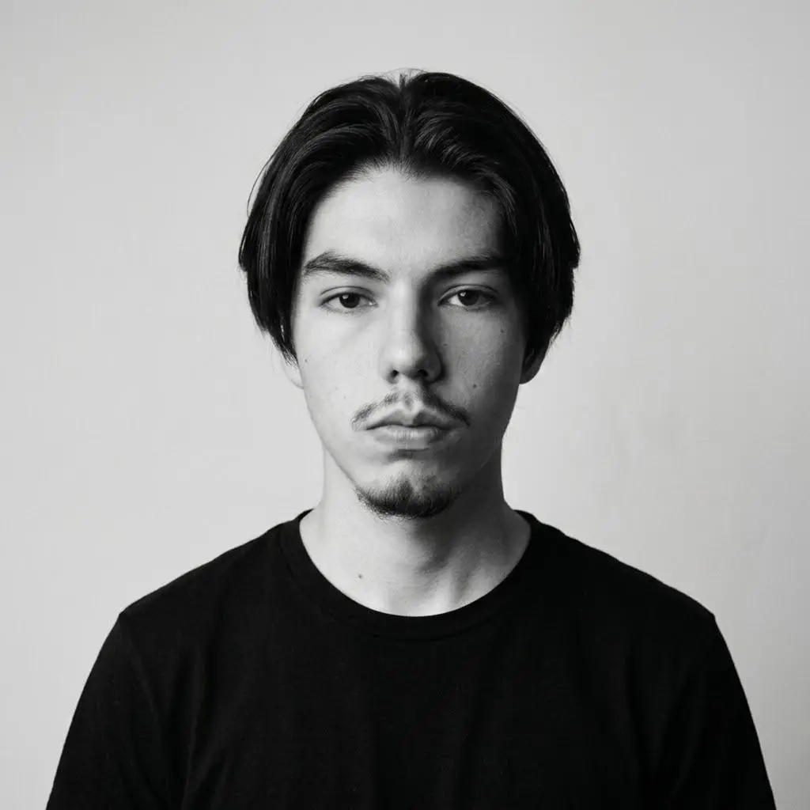
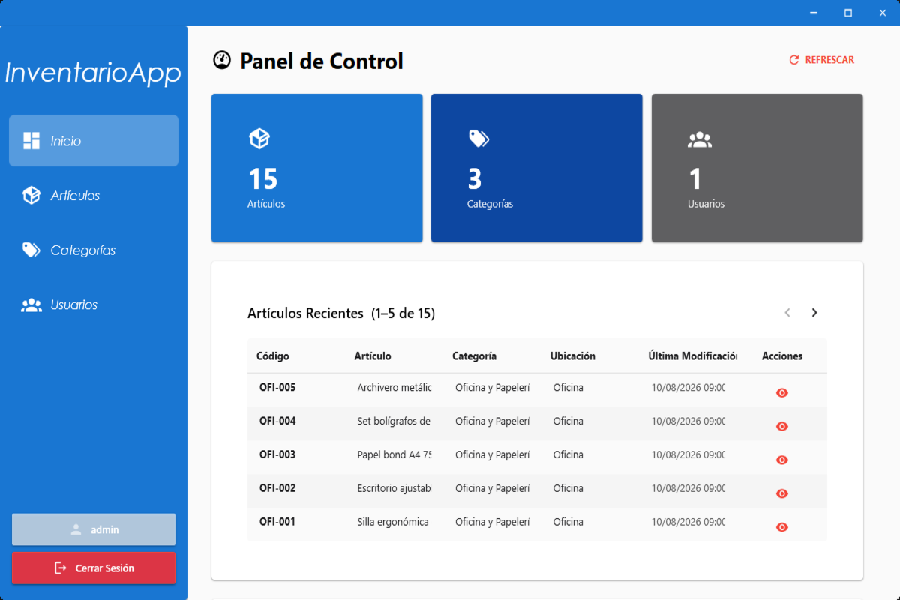

Creativa RAAL Industrial
Caso destacado · soporte técnico y virtualización
Acompañamiento para garantizar continuidad operativa, resolver incidencias y preparar entornos virtuales de prueba para administrar recursos con mayor control.

Ingeniero de Sistemas / IT Specialist & Consultor Freelance
Cartago, Costa Rica
Profesional en TI con cuatro años de experiencia independiente y freelance brindando soporte técnico especializado, optimización de infraestructura, despliegue de entornos virtuales y desarrollo de interfaces web.
Proactivo, con capacidad de autogestión y nivel de inglés B2. Me enfoco en convertir problemas operativos en soluciones claras, documentadas y sostenibles para las personas y equipos que las utilizan.
 Oracle VirtualBox
Oracle VirtualBox Git
Git GitHub
GitHubCaso destacado · soporte técnico y virtualización
Acompañamiento para garantizar continuidad operativa, resolver incidencias y preparar entornos virtuales de prueba para administrar recursos con mayor control.
01 / DESARROLLO DE SOFTWARE
Problema: registro manual y descentralizado de existencias propenso a inconsistencias. Solución: aplicación de escritorio para la administración centralizada del inventario con persistencia en base de datos relacional y transacciones en tiempo real.

02 / Desarrollo web
Problema: tareas internas dispersas y poco visibles. Solución: interfaces ligeras para centralizar información y mejorar el flujo de trabajo.
03 / Soporte TI
Problema: equipos y sistemas con necesidades distintas. Solución: migración, mantenimiento y soporte de endpoints Windows con una operación más consistente.
Universidad Americana de Costa Rica
Formación universitaria en sistemas, tecnología y resolución de problemas.
CTP Fernando Volio Jiménez
Fundamentos de conectividad, infraestructura y operación de redes.